Technical Whitepaper Series
Read in order for full context: architecture -> data model -> performance -> quality gates -> platform roadmap.
Part 1 defined boundaries. Part 2 makes those boundaries executable by defining the findings model that policy, exports, and review workflows all depend on. If this model is weak, everything downstream becomes a debate instead of a decision.
Where this chapter sits in the full narrative
From Part 1, we inherit one constraint: provider differences must not leak into policy semantics. This chapter shows how that is implemented. Part 3 will then test this model under throughput and reliability stress.
1. Why normalized findings are non-negotiable
Raw provider payloads are inconsistent in three ways: naming, lifecycle semantics, and cost attribution granularity. If rules evaluate raw payloads directly, every rule becomes provider-specific and review meetings degrade into field-level translation sessions. The normalized findings model exists to prevent that.
In CWS, adapters map provider-native metadata into canonical entities before any policy evaluation runs. This means policy rules can stay stable while adapters evolve with provider APIs.

2. Canonical schema: minimum fields and invariants
Every finding is required to carry a minimum set of invariant fields: provider identity, account or project scope, stable resource identity, signal type, observation timestamp, rule identifier, rule version, and evidence pointers. If one of these is missing, the finding should be treated as incomplete rather than silently accepted.
Representative canonical shape:
{
"provider": "aws",
"account_id": "123456789012",
"resource_type": "elastic_ip",
"resource_id": "eipalloc-0ab1c2d3",
"signal": "unused_ip",
"severity": "medium",
"evidence": {
"observed_at": "2026-03-18T10:42:00Z",
"source_fields": ["association_id", "network_interface_id"],
"confidence": 0.93
},
"policy": {
"rule_id": "network.unused_ip.7d",
"version": "2026.03.1",
"threshold": "7d"
}
}This model is intentionally boring. Boring is good here. It means exports and APIs can be consumed by finance, platform, and management audiences without each audience requesting a separate pipeline.
3. Evidence lineage: the difference between a hint and an audit-ready finding
Detection without lineage is opinion. Detection with lineage is reviewable evidence. CWS persists enough provenance to answer the three questions every reviewer asks:
- What was observed (field-level context, timestamps, signal family)?
- Under which rule version and threshold was it classified?
- Can another operator reproduce the same result from the same inputs?
Lineage matters most when scan results change week-over-week. Without lineage, teams cannot tell whether the environment changed, the rule changed, or provider behavior changed. With lineage, that distinction is explicit.
4. Deterministic policy evaluation and reproducibility
Policy determinism is treated as a release requirement, not a nice-to-have. Given the same canonical input and the same policy version, output should be the same. Any deviation must be explainable by input difference, rule revision, or evaluation bug.

Illustrative policy snippet:
policy_set: default-ops
version: 2026.03.1
rules:
- id: network.unused_ip.7d
when: resource_type == "elastic_ip"
condition: days_unassociated >= 7
severity: medium
- id: storage.orphan_volume.14d
when: resource_type == "volume"
condition: days_unattached >= 14
severity: high
- id: compute.idle_instance.7d
when: resource_type == "instance"
condition: cpu_p95 < 5 and net_out_p95 < 1
severity: mediumThreshold tuning is expected across organizations. The key is that tuning remains explicit, versioned, and traceable.
5. Cross-team handoff design: one model, multiple consumers
Finance, platform, and leadership teams need different projections from the same finding:
- Platform: resource identifiers, dependency hints, rollback-safe sequencing.
- Finance: estimated monthly impact bands, account ownership, aging context.
- Management: category trends, closure rate, unresolved high-risk items.
Because all three views are projections of one canonical model, teams avoid reconciliation loops where numbers disagree across dashboards and exported packs.
6. Case: why this model reduces weekly-review friction
In a typical weekly review, one finding can trigger three objections: "is this real?", "who owns it?", and "can we safely act?". The model addresses each directly:
- "Is this real?" - answer with evidence lineage and observation window.
- "Who owns it?" - answer with account/project scope and tags.
- "Can we safely act?" - answer with rule rationale and recommended action class.
This structure does not eliminate disagreement, but it moves disagreement from opinion to inspectable facts.
7. Honest limits
- Telemetry depth remains permission-bound; some signals need extra provider metrics configuration.
- Cross-provider parity is improved but not perfect; model stability does not imply equal signal richness.
- Determinism depends on disciplined versioning. Untracked rule changes are governance debt.
Policy operations appendix: from model design to weekly execution
Once the model is defined, the difficult part is keeping it useful in weekly operations. A useful policy model has three operational properties: low ambiguity, stable semantics, and explicit exceptions. Low ambiguity means reviewers can understand why a finding exists without opening five provider consoles. Stable semantics means rule behavior does not shift unexpectedly between release cycles. Explicit exceptions mean known environment-specific deviations are documented as policy overrides instead of hidden in ad-hoc scripts.
In practical terms, teams should establish a policy change protocol. Any threshold adjustment, rule addition, or signal deprecation should include: a short rationale, expected side effects, rollback condition, and impacted stakeholder groups. For example, tightening an idle threshold from 14 days to 7 days can improve responsiveness but may increase false positives for monthly batch workloads. That tradeoff is acceptable only if affected teams are informed and if the output includes contextual signals to reduce noisy escalations.
A second operational recommendation is to treat confidence values as decision support, not absolute truth. Confidence should guide triage priority, but action safety should still rely on evidence lineage and dependency context. Teams that over-index on numeric confidence can miss higher-risk lower-confidence findings that involve shared infrastructure or compliance-sensitive resources. We recommend combining confidence with resource criticality and ownership maturity in review scoring.
A third recommendation is to classify policy outcomes into action classes that map to workflow reality: observe, review, optimize, and escalate. "Observe" means keep visibility but defer action; "review" means assign owner and validate context; "optimize" means safe, owner-approved change can proceed; "escalate" means governance or security review is required first. This action taxonomy helps non-engineering stakeholders participate in decisions without reading raw provider metadata.
Finally, maintain a compact policy glossary. Terms like orphaned, idle, stale, and underutilized can carry different meanings across teams. A one-page glossary linked from reports reduces interpretation drift and shortens meeting time. The objective is not academic precision; it is operational alignment. If two teams use the same word for different states, your model can be technically strong and still fail at execution.
Implementation FAQ: maintaining model quality after launch
Q: How often should rules be tuned? Tune on a fixed cadence, not ad-hoc reaction. Monthly tuning works for most teams; high-change environments may use bi-weekly review. Every tune should include rationale and rollback trigger.
Q: What if finance and platform disagree on severity? Keep one severity field from policy and add audience-specific projection columns in exports. Do not fork rule logic per audience. Divergent logic is harder to audit than divergent display preferences.
Q: How do we handle incomplete telemetry? Use explicit confidence and missing-signal markers instead of suppressing findings. Suppression hides risk. Transparent uncertainty supports better decisions and clearer ownership discussions.
Q: How do we avoid term drift in long programs? Keep a controlled glossary and version it with policy. If a term definition changes, that change should appear in release notes and review handbooks. Language drift is a real source of governance error.
Q: What is the best early KPI? Not raw finding count. Track review closure cycle time and percentage of findings with clear owner plus action class. Those metrics show whether the model helps teams move from detection to execution.
Field notes: where teams usually get stuck
The first friction point is ownership tagging quality. A good model still produces weak outcomes if account tags are inconsistent or stale. Teams should schedule a lightweight ownership hygiene pass before expecting high closure rates. The second friction point is threshold overfitting. If thresholds are tuned too tightly for one month of behavior, model outputs become unstable when workload patterns shift. Keep thresholds conservative at first, then narrow only when historical evidence supports it. The third friction point is review overload. When everything is marked urgent, nothing is urgent. Use action classes and ownership to keep workload realistic.
In adoption reviews, we recommend a simple maturity ladder: baseline visibility, stable ownership, and then optimization throughput. Skipping directly to optimization often fails because teams are trying to automate decisions before they trust the model context. It is slower in week one, but faster by month two when governance cadence is stable.
Data sources for this chapter
- Metrics Definition and API Reference: field-level semantics and API projections.
- API Playbooks: operational usage patterns for structured outputs.
- Release Ledger: traceability context for evolving rule and output behavior.
Next: proving this model under load and failure
Part 3 examines throughput strategy, throttling-safe concurrency, failure isolation, and rollout patterns in restricted network environments.